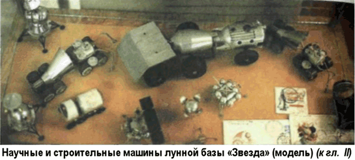

Лунные заводы
Сегодня интерес к Луне возвращается.
И вновь заговорили о необходимости строительства лунной базы.
Дело в том, что исследования лунного грунта показали: естественный спутник Земли — это поистине неисчерпаемый резервуар энергетики будущего.
Как известно, большие надежды на решение энергетических проблем возлагаются на управляемые термоядерные реакции.
В основе этих процессов лежит реакция синтеза ядер, обладающая эффективным выделением энергии при малых эксплуатационных затратах и практическим отсутствием радиоактивных отходов. Одна из таких реакций заключается в слиянии ядер дейтерия и изотопа гелий-3. На Земле данный изотоп встречается крайне редко. Специалисты оценивают его доступные запасы чрезвычайно малой величиной — около 500 килограммов. На Луне же в течение четырех миллиардов лет лунный грунт, как губка, «впитывал» гелий-3, приносимый солнечным ветром Результаты анализа образцов лунного грунта показывают, что в первых пяти метрах раздробленного слоя реголита накопилось порядка миллиона тонн гелия-3.
Такого количества ядерного топлива хватило бы на обеспечение электроэнергией не только лунной базы, но и всего человечества на протяжении 5 тысяч лет! Бомбардировка Луны метеоритами в течение сотен миллионов лет привела к тому, что ее поверхностный слой на глубину до 10 метров находится в раздробленном состоянии.
Это облегчает добычу и транспортировку лунного грунта к месту переработки. Отпадает необходимость в применении специальной техники для горнорудных разработок.
Самые общие подсчеты показывают, что в лунном карьере размером 100 на 100 метров и глубиной 10 метров (объем рыхлого вещества в естественном залегании) содержится значительное количество различных материалов. Уже сейчас можно сказать, что такой карьер обеспечит получение около 40 тысяч тонн кремния, пригодного, например, для изготовления ячеек солнечных батарей. Этого количества хватит для кремниевых фотоэлектрических преобразователей общей площадью примерно 12 км2. При современной эффективности типовых солнечных батарей такая гелиоэлектростанция по мощности будет равна, например, Ново-Воронежской АЭС или в три раза превысит мощность Днепрогэса.
Этот же лунный карьер может дать 9 тысяч тонн титана для изготовления несущих конструкций высокой прочности и долговечности. Для производства электроарматуры или других элементов космических сооружений на Луне и в окружающем космосе в карьере «найдется» от 15 до 30 тысяч тонн алюминия и от 5 до 25 тысяч тонн железа. К этим материалам добавится еще некоторое количество магния, кальция, хрома и других химических элементов. Наконец, из того же объема лунного реголита можно экстрагировать от 80 до 90 тысяч тонн кислорода. Добываемый кислород можно использовать в системе жизнеобеспечения самой лунной базы, в различных технологических процессах и в качестве одного из компонентов ракетного топлива.
Американская фирма «Карботек» («Carbotek») по контракту с НАСА разработала проект крупной установки на лунной поверхности для производства кислорода в количествах, позволяющих использовать его в качестве ракетного топлива в двигателях водородно-кислородного типа. В качестве исходного материала предполагается использовать породы, обогащенные ильменитом. В установке происходит процесс экстракции при температурах от 700 до 1200° и давлении 10 атмосфер. Проект рассчитан на 400 тонн полезной нагрузки для транспортировки на лунную поверхность из которых 45 тонн приходится на энергетическую установку мощностью 5 МВт для поддержания процесса экстракции.
Такой «кислородный завод» на лунной поверхности должен давать 1000 тонн кислорода в год.
Если треть добываемого кислорода использовать в качестве компонента ракетного топлива, то потребуется еще около 40 тонн водорода в год. Ученые из Вашингтонского университета рассчитали возможность получения такого количества водорода из поверхностной тонкой фракции лунного грунта и предложили проект соответствующего комплекса.
При типичном содержании водорода в верхнем рыхлом слое грунта (в результате насыщения частицами солнечного ветра), равном 50 микрограммам на грамм природного реголита, необходимо перерабатывать 6700 тонн тонкой фракции в день, если основываться на солнечной энергетике, и ограничить продолжительность активной работы установки 120 сутками в год.
Каким образом можно перерабатывать несколько тысяч тонн грунта в день? Предлагается передвигать весь комплекс со скоростью 6 км/ч при глубине обработки грунта до 1 метра. Принцип работы установки заключается в нагревании массы исходного материала (от солнечного коллектора) до 700° при давлении до 10 атмосфер. При этом из лунного вещества выделятся и другие газы. Наиболее эффективная технология — сжигание полученной из реголита смеси газов в лунном кислороде с последующим отделением воды. Предполагается, что наиболее целесообразно хранить и транспортировать полученный продукт в жидком виде с последующим применением электролиза для разделения кислорода и водорода непосредственно перед использованием.
В Университете Висконсина разработан проект другого завода-автомата передвижного типа для получения упомянутого выше изотопа гелия-3. В передней части добывающего агрегата размещается вращающее колесо с ковшами типа роторного экскаватора, которое черпает рыхлый грунт и загружает его в бункер, где происходит обработка. В основном модуле этого завода около 800 тонн грунта с помощью микроволновой техники всего за полчаса нагревается до 650°. Из выделяющейся газовой смеси отбирается гелий-3. По предварительным оценкам продуктивность этого комплекса может достигать 20 килограммов уникального газа в год. «Отжатый» грунт возвращается назад на поверхность, а завод продолжает свое движение к новому участку.
Таким образом, строительство базы или перерабатывающего завода на Луне становится экономически выгодным.
Неудивительно поэтому, что темой освоения естественного спутника Земли заинтересовались и частные компании, рассчитывающие извлечь из реголита быструю и ощутимую прибыль.
Одна из таких компаний, американская «Applied Space Resources» («ASR»), намерена уже через пять лет отправить в космос свой первый лунный корабль. На организацию этой экспедиции потребуется не менее 1,5 миллиарда долларов, но руководство компании считает возможным изыскать требуемые средства. Что ж, поживем — увидим…
